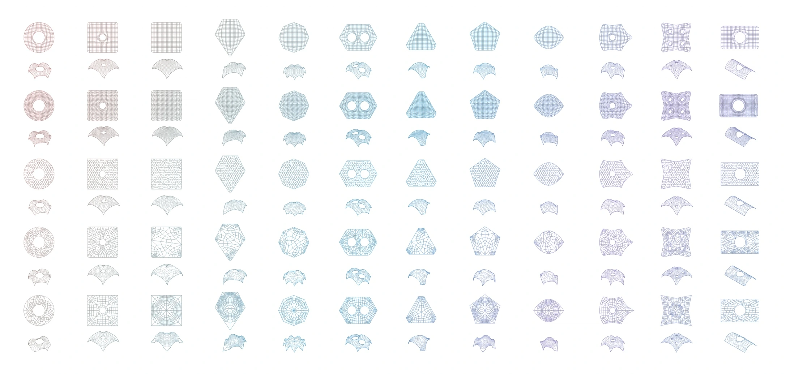
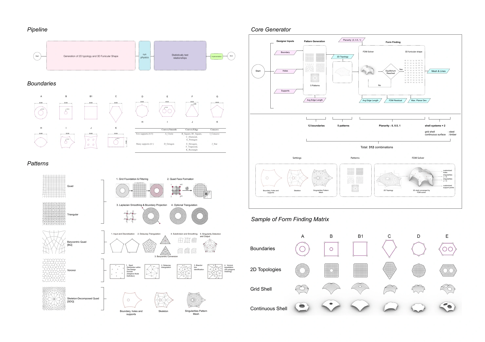
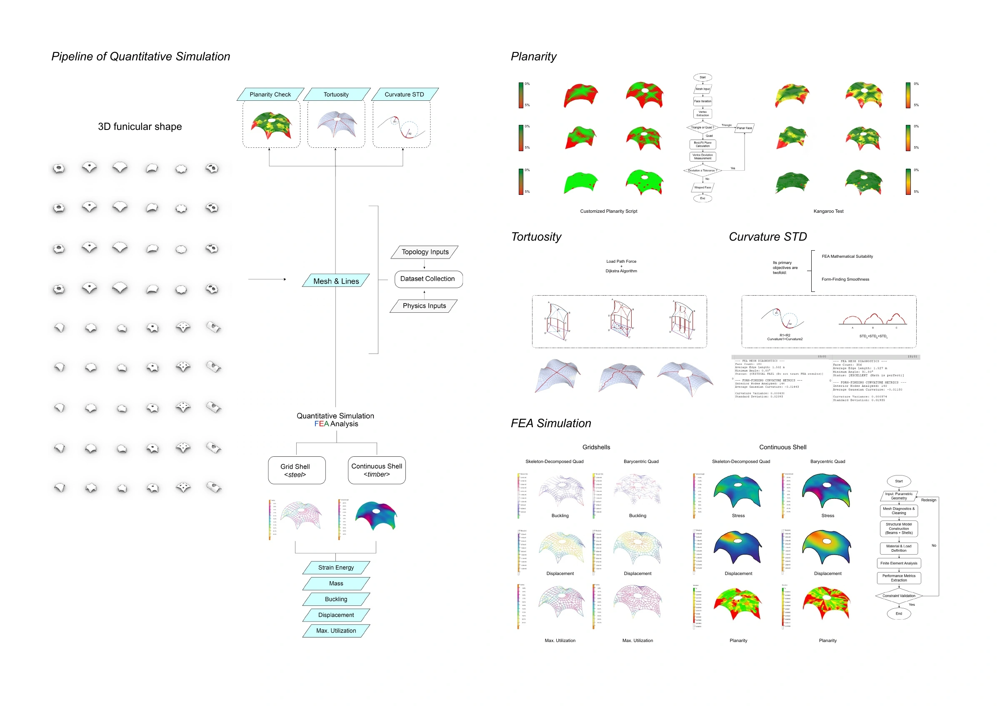
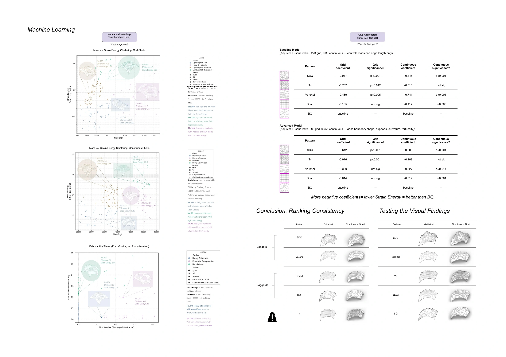
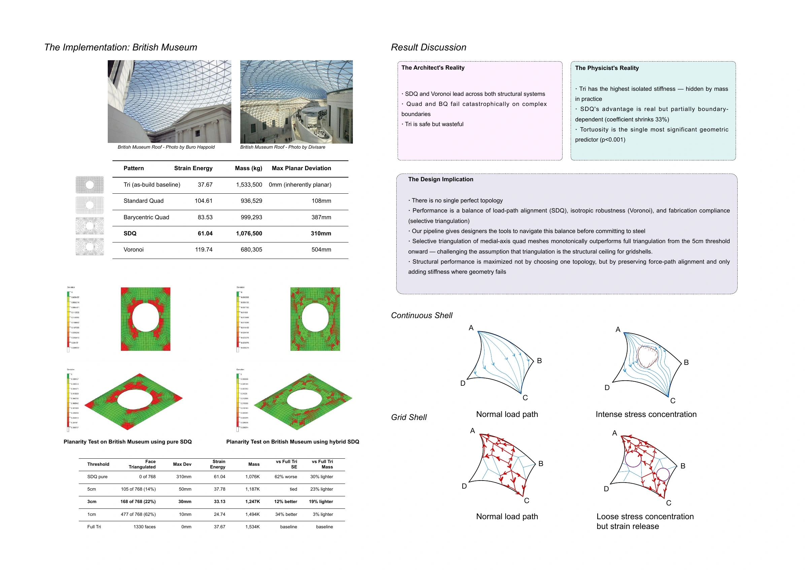

The Dual Reality of Topological Performance.
Topology, morphology and fabrication in discretised free-form shells.
- Date
- January – March 2026
- Context
- UCL / Digital Ecologies
Group project - Methods
- Python, force-density form-finding, Karamba3D, K-means, regression

How topology shapes performance
This study compares beam-based gridshells and plate-based continuous shells across twelve boundary geometries, five topology patterns, and three levels of planarity deviation. A custom Python workflow connects topology generation, force-density form-finding, geometric evaluation, and Karamba3D structural analysis.
K-means clustering and multiple linear regression are used to investigate the relationship between geometric organisation and structural performance. The findings inform an application to the British Museum Great Court roof, connecting quantitative evaluation with topology selection and fabrication decisions.
Project documentation
04 PLATES{kind=link}

{kind=link}

{kind=link}

{kind=link}
